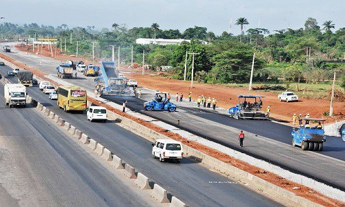

REVIEWERS MEDIA pre-wedding check out pre-wedding photos of this beautiful couples
NIGERIA REQUIRES N23BN ANNUALLY TO DEVELOP ITS INFRASTRUCTURE
Nigeria requires N23 billion annually to meet its infrastructure financing needs, an official has disclosed.
Adekunle Oyinloye, the Chief Executive of The Infrastructure Bank, TIB, who disclosed this at a press conference in Lagos at the weekend, said that infrastructure decay in the country was massive and required huge funding.
He said that the Federal Government, through the National Planning Commission, once came up with a need of N30 trillion for infrastructure provision in the next 30 years.
Oyinloye said that the current reality was that government could no longer develop the infrastructure alone and needed the partnership of the private sector.
“Government has the responsibility to provide infrastructure, but does not have enough resources to do it.
“Government money can never be enough to develop the infrastructure.
“The government is doing everything within its reach to engage the private sector in the legal regulatory area to ease doing business so that private sector can come in and close the gap.
“This is important as the crude oil price continues to drop at the international market.
“This means that the government must deliberately befriend the private sector to close the gap in infrastructure funding”, he said.
Mr. Oyinloye said that the Public-Private Partnership (PPP) was now the best option available to develop the infrastructure in the country in view of declining crude oil earnings.
He said that there were ways to structure deals to ensure iron-cast protection of private investors in PPP.
The bank chief executive said that once private investors were sure of the safety of their investments, they would be more willing to release their funds.
“The first principle in PPP is the principle of fairness and our job is to do that. Once a project is bankable, you can always find financiers”, he said.
Mr. Oyinloye, however, said that a major challenge in sourcing funds was the unstable exchange rate of the naira, stressing that many resources were being mobilised abroad.
He said that the bank was devising means to address the problem and attract funds to the country.
He also said TIB would create an asset management subsidiary to manage portfolios of private investors in infrastructure projects in the country.